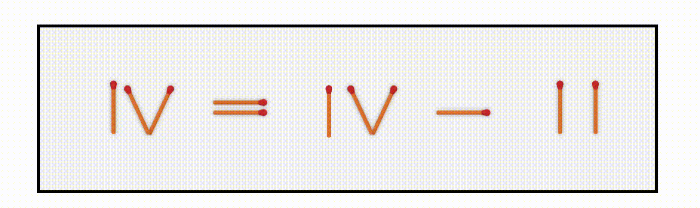
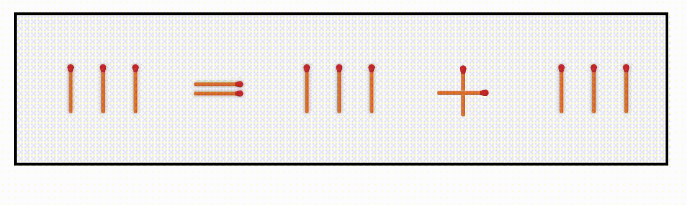

Warm-Up Problem
One matchstick move turns the right side into the correct value.
CogSci 2026
We use think-aloud speech and state-of-the-art natural language processing tools to study observable signatures of insight and transfer in problem solving.
Example Problem
Task Design
Insight problems often require people to change how they represent the task. Because that shift is hard to observe directly, we use the first correct solution as a proxy for a candidate restructuring event.
Building on classic matchstick-arithmetic tasks, participants solved five problems while thinking aloud. Some saw the same solution structure repeat, while others saw a new structure on each trial, letting us ask whether speech changes when a solution structure can be reused.
Examples

One matchstick move turns the right side into the correct value.


The solution comes from changing the relation between the terms, not the numerals.
Main Idea
Very briefly: signatures of insight appeared around the first correct solution, and signatures of transfer appeared in how speech patterns continued afterward.
Around the first correct solution, participants spoke more, said different things, and considered fewer distinct candidate moves.
When the same problem type repeated, participants kept changing how much, how fast, and what they said after success.
Embedding-based classifiers distinguished speech from different problem-solving phases, showing that what participants said varied around first success.
Only when structure repeated did participants increasingly name or categorize the problem type, consistent with transfer.
Resources
The paper describes the experiment, speech analyses, NLP classifiers, and reasoning-move annotations. The repository contains anonymized data, analysis notebooks, and helper scripts for speech processing.